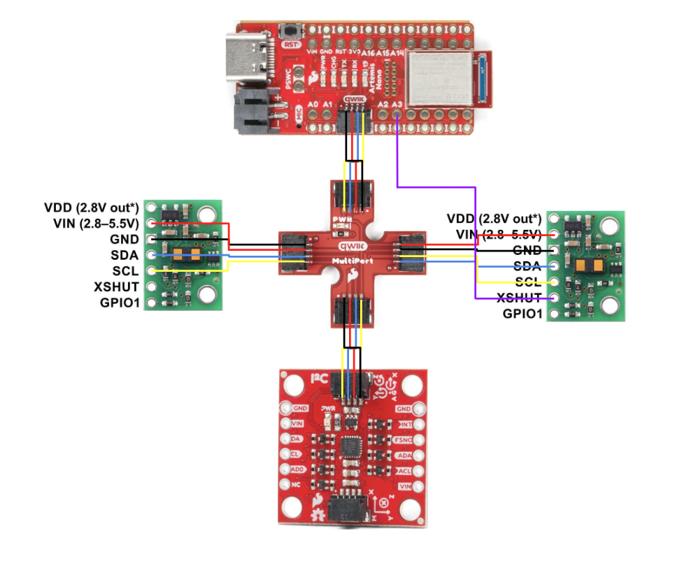
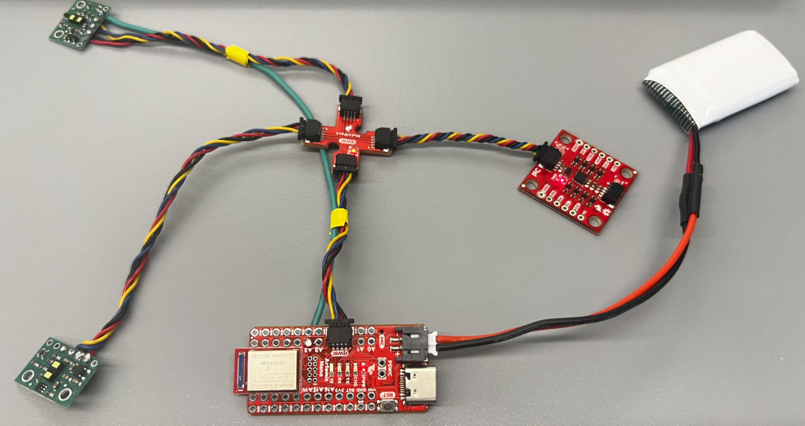
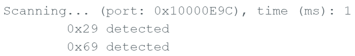
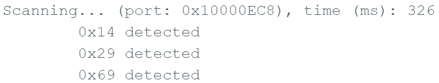
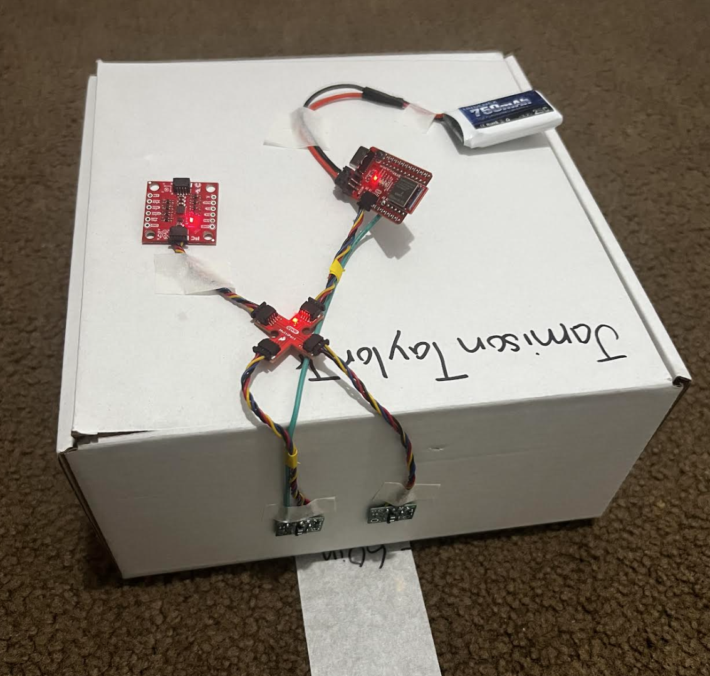
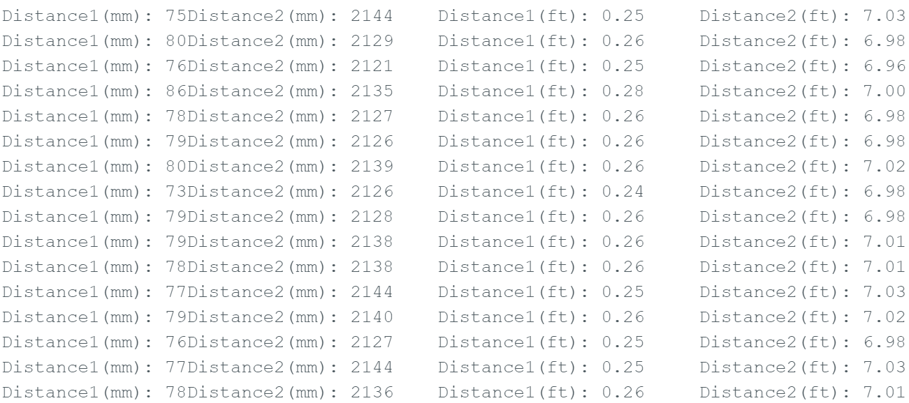
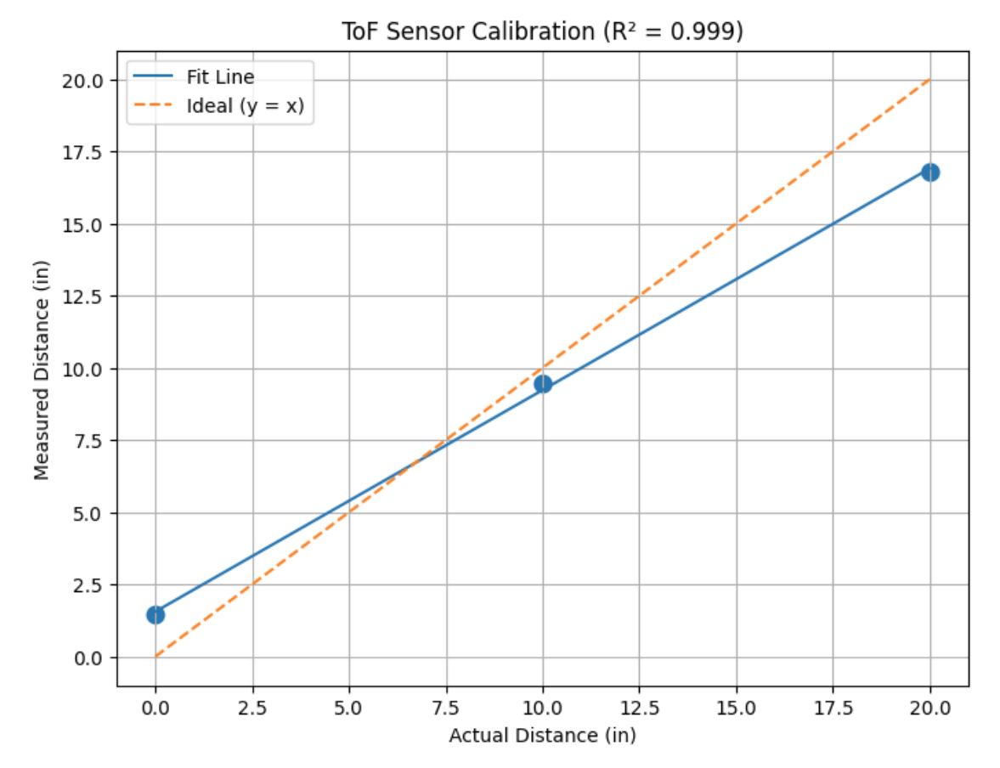
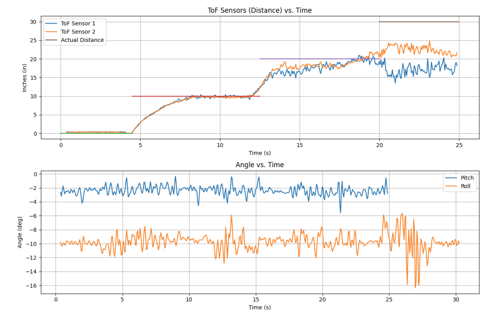
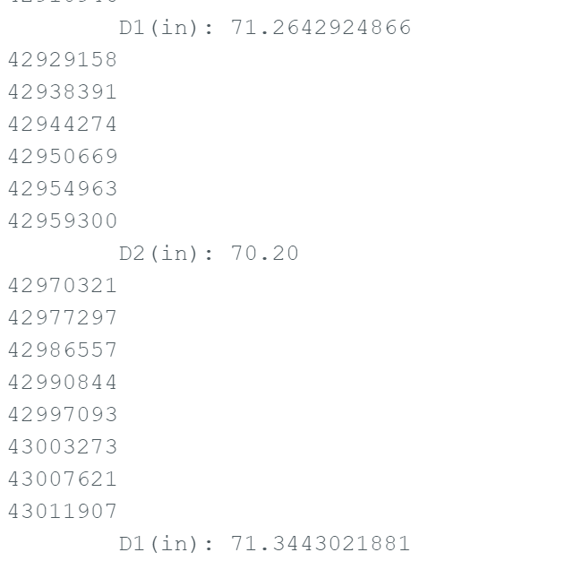

Lab 3: ToF Sensors + I2C Addressing
This lab focuses on scanning the I2C bus, configuring two VL53L1X Time of Flight sensors with unique addresses, selecting a ranging mode, and evaluating range, accuracy, repeatability, and ranging time. Data is streamed over Bluetooth while running ToF + IMU in parallel.
1. Prelab
I2C Addresses
- Time of Flight (ToF) Sensor 1:
0x14 - Time of Flight (ToF) Sensor 2:
0x29 - Inertial Measurement Unit (IMU):
0x69
Addressing Workflow
- Connect both ToF sensors to the I2C bus.
- Use SHUT/XSHUT to turn one ToF sensor off.
- Initialize the active ToF sensor and assign it a new address (e.g.,
0x29). - Turn the second ToF sensor back on.
- Initialize the second sensor at its address and read both sensors in the loop.
Sensor Placement on the Robot
The most important placements for ToF sensors are the front and back of the robot. The robot mainly moves forward/backward and turns, so forward/back obstacle detection is critical. The robot may still miss obstacles above/below it, and certain side-angle obstacles depending on placement.
Circuit Diagram
Here is my circuit diagram showing the Artemis, two VL53L1X ToF sensors, and the IMU. Both ToF sensors are connected to the same I2C bus, with one sensor’s SHUT pin used for address reassignment.

Circuit Diagram
2. Lab Tasks
Hardware Setup + I2C Scan
To use two VL53L1X sensors at once, at least one sensor needs a unique I2C address. Both sensors start with the same default address, so I used the SHUT (XSHUT) pin to temporarily disable one sensor and then reassigned the other.

ToF Sensor + QWIIC Breakout Wiring

Detection of Two Addresses

Detection of Three Addresses
I2C Address Summary
I initially detected 0x29 (default ToF address) and 0x69 (IMU). After re-addressing, I assigned 0x29 to one ToF sensor and the other ToF sensor appeared at 0x14.
Setup / Addressing Sensors Code
SFEVL53L1X distanceSensor1;
SFEVL53L1X distanceSensor2(Wire, XSHUT_PIN, INTERRUPT_PIN); // Contains interrupt and shutoff
void setup(void)
{
Wire.begin();
Serial.begin(115200);
// Set GPIO
pinMode(XSHUT_PIN, OUTPUT);
// Turn off one of the sensors
digitalWrite(XSHUT_PIN, LOW);
delay(10);
// Change I2C address
distanceSensor2.setI2CAddress(0x29);
// Turn the sensor back on
digitalWrite(XSHUT_PIN, HIGH);
delay(10);
if (distanceSensor1.begin() != 0) {
Serial.println("Sensor 1 failed to begin. Please check wiring. Freezing...");
while (1) {}
}
if (distanceSensor2.begin() != 0) {
Serial.println("Sensor 2 failed to begin. Please check wiring. Freezing...");
while (1) {}
}
Serial.println("All Sensors Are Online!");
}3. ToF Modes (Short, Medium, Long)
Pros / Cons and Mode Selection
The VL53L1X supports multiple ranging modes that trade off speed, range, and robustness under different lighting conditions.
Short Mode
- Best for close range detection (~1–1.3 m typical)
- Fast updates (good for high-speed feedback)
- Low power
- Better performance in high ambient light
- Reduced motion blur
Tradeoff: lower max range than medium/long mode.
Medium Mode
(Only available with the Pololu VL53L1X library)
- Balanced range and speed
- Moderate accuracy
- Acceptable noise rejection
Tradeoff: slower than short mode and less range than long mode.
Long Mode
- Longest range
- Better sensitivity for weak returns
- Good for detecting far obstacles
Tradeoffs: slower updates, higher power, more sensitive to ambient IR noise, and more motion blur on fast robots.
Chosen Mode for This Robot
I chose Short Mode because the robot needs fast feedback for high-speed motion. In class, we focus on moving the robot quickly, and faster updates are more important than long-range detection for this use case.
Short Mode Code
distanceSensor1.setDistanceModeShort();
distanceSensor2.setDistanceModeShort();4. Test the Chosen Mode (Short Mode)
Experiment Setup
I taped both ToF sensors to a box and faced them toward a wall. Over Bluetooth, I streamed ToF distance readings while collecting IMU data in parallel. This helped me evaluate range, accuracy, repeatability, and ranging time.

ToF Test Setup (Sensors Facing Wall)

Arduino Print Sensor Output
Loop / Distance Collection Code
void loop(void)
{
distanceSensor1.startRanging();
distanceSensor2.startRanging();
while (!distanceSensor1.checkForDataReady()) { delay(1); }
while (!distanceSensor2.checkForDataReady()) { delay(1); }
int distance1 = distanceSensor1.getDistance();
int distance2 = distanceSensor2.getDistance();
distanceSensor1.clearInterrupt();
distanceSensor2.clearInterrupt();
distanceSensor1.stopRanging();
distanceSensor2.stopRanging();
Serial.print("Distance1(mm): ");
Serial.print(distance1);
Serial.print(" Distance2(mm): ");
Serial.print(distance2);
float distanceInches1 = distance1 * 0.0393701;
float distanceFeet1 = distanceInches1 / 12.0;
float distanceInches2 = distance2 * 0.0393701;
float distanceFeet2 = distanceInches2 / 12.0;
Serial.print("\tDistance1(ft): ");
Serial.print(distanceFeet1, 2);
Serial.print("\tDistance2(ft): ");
Serial.print(distanceFeet2, 2);
Serial.println();
}Results

Actual vs Measured Distance
Range
In short mode, the sensors were most reliable within about 0–12 inches (1 foot). Past 1 foot, the data became much less consistent. I also tested with extra lighting aimed into the sensor path and saw similar results.
Accuracy
Within 0–12 inches, the readings were reasonably accurate. Any small differences between measured and true distance were most likely due to human measurement error. Beyond 1 foot, accuracy decreased significantly.
Repeatability
Within the effective range, repeated measurements at the same distance produced consistent readings (good repeatability).
Ranging Time / Speed
I ran the program 500 times and it took 30.24 seconds total.
Ranging time = 30.24 s / 500 = 0.06048 s = 60.48 ms
This timing is slower because both ToF sensors + accelerometer + gyroscope were running at the same time, and data was being sent over Bluetooth.
Time vs Distance (2 Sensors)

5. (5000) Infrared Sensor Discussion
Infrared Transmission + Surface Sensitivity
The VL53L1X uses infrared light reflection to measure distance, so performance depends on the surface and the environment.
(5000) IR-Based Sensor Behavior
- Measures time-of-flight of reflected IR light
- Stronger reflections improve signal quality
- Ambient IR (sunlight/bright lighting) can add noise
- Range and accuracy depend on return signal strength
(5000) Sensitivity to Colors + Textures
- Bright/light surfaces usually reflect more IR (better readings)
- Dark surfaces can absorb IR (weaker return, noisier readings)
- Smooth surfaces reflect more consistently
- Rough/angled surfaces scatter IR (can reduce accuracy)
6. ToF Sensor Speed (Code Snippet)
How I Measured Timing
To ensure the code executes as quickly as possible—and to prevent the sensors from forcing the program to hang while waiting for new measurements—I implemented the following changes:
-
Removed blocking while loops: I eliminated the
while (!distanceSensor1.checkForDataReady())statements so the program no longer stalls while waiting for new sensor data. -
Started ranging once instead of every iteration: I moved
startRanging()to the beginning of the loop (initialization) andstopRanging()to the end. Continuously stopping and restarting the sensors increases measurement latency and reduces loop speed. -
Added a high-resolution timestamp: I created a constant
32-bit unsigned integer variable
t_usand set it equal tomicros(). Printing this value allowed me to observe how quickly the main loop executes. -
Implemented non-blocking sensor checks: I wrapped the
getDistance()andclearInterrupt()calls inside anif (distanceSensor1.checkForDataReady())statement. This ensures new distance values are only read when available, allowing the loop to continue running at maximum speed otherwise.
These changes converted the sensor logic to a fully non-blocking architecture, allowing the control loop to run continuously without being limited by sensor measurement timing.
Timing Code (Paste Yours)
float distance1_in = NAN;
float distance2_in = NAN;
ToF_Sensor_1.startRanging();
ToF_Sensor_2.startRanging();
int count = 0;
for (int i = 0; i < Acc_length; i++){//change Acc_length late
const uint32_t t_us = micros();
Serial.println(t_us);
count++ ;
if (ToF_Sensor_1.checkForDataReady()){
int distance1 = ToF_Sensor_1.getDistance();
ToF_Sensor_1.clearInterrupt();
//ToF_Sensor_1.stopRanging();
distance1_in = distance1 * 0.0393701f;
Serial.print("\tD1(in): ");
Serial.print(distance1_in, 2);}
if (ToF_Sensor_2.checkForDataReady()){
int distance2 = ToF_Sensor_2.getDistance();
ToF_Sensor_2.clearInterrupt();
//ToF_Sensor_2.stopRanging();
distance2_in = distance2 * 0.0393701f;
Serial.print("\tD2(in): ");
Serial.println(distance2_in, 2);}
Tof1_in[i] = distance1_in;
Tof2_in[i] = distance2_in;
}
ToF_Sensor_1.stopRanging();
ToF_Sensor_2.stopRanging();
Arduino Output

7. Resources
SparkFun VL53L1X Library
Used for sensor initialization, ranging mode configuration, and reading distance values.
Course Materials
Used for understanding I2C scanning, addressing, and performance tradeoffs for ToF modes.
ChatGPT
Helped clean up and format the lab write-up into a consistent webpage structure.